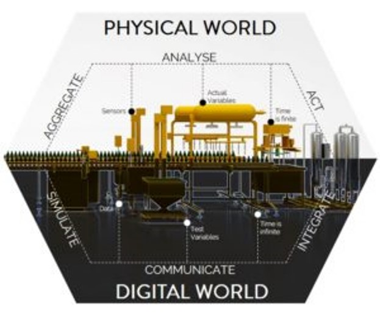
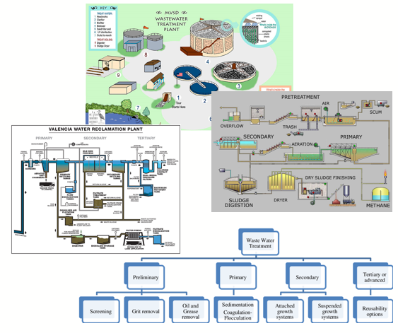
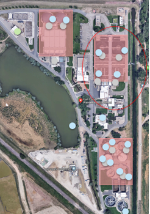
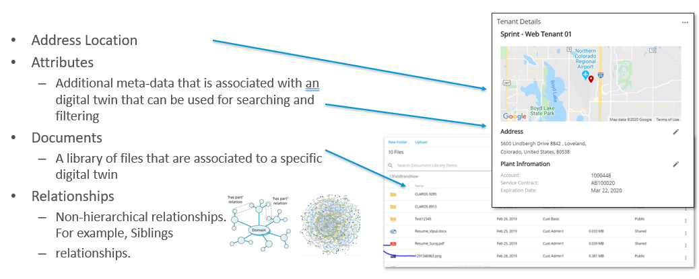
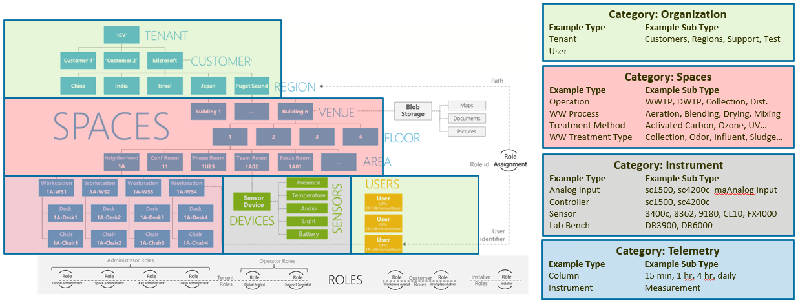

Digital Twins
Enterprise Twin are digital twins that provide multiple essential purposes including: Organizational Modelling and Security, Resource-Based Access Control, physical world modelling, Instrument relations with Telemetry, and Data Cataloguing through Telemetry Twins.
Digital Twins are classified through a Category (Organizational, Spatial, Instrument and Telemetry) and then by a Type and then by a Sub-Type.
Digital Twin Definition Language (DTDL) is leveraged to describe data schemas that unleash the power of the data stored within the Digital Twins.
What is a Digital Twin?
Digital twin is the phrase used to describe a computerized (or digital) version of a physical asset and/or process.
Digital Twins are an industry concept
There are different implementation of the concept with each vendor
- AQI has implemented it’s own Digital Twins to
Optimize for cost and performance
Optimize for specific Water Quality needs
Provides Data about Physical Counterpart
This data can be used to model the “Real World” by recording attributes of the physical world.
Hierarchical Context
Often applications will use a hierarchical view to organize data and systems such as Spatial Graphs for Treatment Plants
Geospatial Context
Virtual Items represent items in a “Physical World” - Where is the item? - To whom does the digital twin belong?
Metadata and Attributes
Digital Twin Categories, Types and SubTypes
Categories
Organization (Tenants, Customers, Regions): Used to model the multi-tenant aspects of Space, Device and Sensor Ownership
Space (Locations): Used by Engineering companies to simulate a physical environment so that guidance can be given to the creation or modification of a system
Instrument (Device and Sensors): Used by IoT frameworks to create a virtual copy of an instrument, so that the cloud software can talk to the virtual copy (device twin) instantaneously, and the device twin will take care of the synchronization to the real, physical hardware.
Telemetry Category (Measurements, Columns): Signal data (Measurements, Events, etc.) from Devices and Sensors.
Types
Within each Category, each digital twin is further classified by a type.
Heading Category |
Heading Type |
|---|---|
Organization |
Users, Tenants |
Space |
Operation, Plant, Wastewater Locations, Sampling Locations |
Instrument |
Controllers, Process Instruments, Lab Instruments |
Telemetry |
Spreadsheet Columns, Historical Data |
Sub-Types
Within each Category and Type, each digital twin is further classified by a subtype.
Heading Category |
Heading Type |
Heading SubType |
|---|---|---|
Organization |
Tenants |
Customers, Demo, Regional, Private Water Company, Test Account |
Space |
Operation |
Surface Water Treatment Plant, Wastewater Treatment Plant, Collection System, Distribution System |
Instrument |
Controllers |
Hach SC200, Hach SC4200, Hach SC4500 |
Telemetry |
Spreadsheet Columns |
15 Minute, Hourly, Four Hour, Daily |